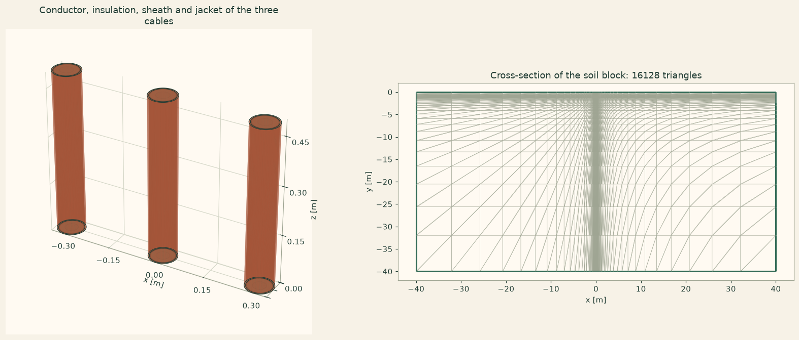

Docs › Examples › Heating of buried power cables
Heat transfer · 2D
Heating of buried power cables
Three 132 kV cables buried side by side: how hot the conductors run, and how much they heat each other.
Run locally with OneSimulation. The example downloads are free. Running them requires an activated runtime. OneSimulation 1.0 · CPython 3.13 on macOS (Apple Silicon), Ubuntu 22.04 (x86-64), and Windows x64. Installation and activation · View pilot plans. Scope of the reference checks.

What it computes
OneSimulation reads the soil block and the four layers of the three cables from STEP files and cuts them to the cross-section, meshes it with curved blocks that put a node line on every layer interface and solves steady 2D conduction with quadratic elements and region-wise conductivity and Joule heating on three meshes. The script that builds the STEP files comes with the notebook.
What it checks
The conductor temperatures approach the IEC 60287 thermal circuit with mirror images from below as the mesh is refined, to -0.10 K for the outer and -0.15 K for the middle conductor on the finest mesh (0.2 to 0.3 % of the temperature rise of about 57 K); the heat flux through the ground surface follows the line-source formula and the energy balance closes to 0.2 %.
Geometry
The notebook starts at the import of the CAD files buried_cables_heating.step, buried_cables_heating_conductor.step, buried_cables_heating_insulation.step, buried_cables_heating_jacket.step, buried_cables_heating_sheath.step: STEP (AP242), readable by any CAD program, with the names of the faces that the boundary conditions use. Put them next to the notebook.


The geometry script
The script buried_cables_heating_geometry.py builds the geometry with the CAD objects of OneSimulation and writes the files. Change a dimension there, run it, and run the notebook again.
"""Geometry of the OneSimulation example "Heating of buried power cables".
Builds a 0.5 m long piece of the ground and of the three cables with the CAD objects of
OneSimulation. The soil block, 80 m wide and 40 m deep with the ground surface at y = 0, is written
to buried_cables_heating.step with the faces surface (y = 0), bottom (y = -40 m) and sides. The
layers of the three cables, laid 1 m deep and 0.3 m apart, go to one file each:
buried_cables_heating_conductor.step, ..._insulation.step, ..._sheath.step and ..._jacket.step.
The example computes on the cross-section z = 0.25 m.
"""
from onesim.cad.d3 import AnnularCylinder, Box, Cylinder
half_width, piece = 40.0, 0.5
radii = (0.019, 0.035, 0.0375, 0.0415)
centres = ((-0.3, -1.0), (0.0, -1.0), (0.3, -1.0))
soil = Box(
length=2 * half_width,
width=half_width,
height=piece,
origin=(-half_width, -half_width, 0.0),
)
faces = soil.boundaries
soil.grouped(
surface=faces.y_max, bottom=faces.y_min, sides=faces.x_min | faces.x_max
).save("buried_cables_heating.step")
for name, inner, outer in zip(
("conductor", "insulation", "sheath", "jacket"), (0.0,) + radii[:-1], radii
):
layer = [
(
Cylinder(radius=outer, length=piece, origin=(x, y, 0.0))
if inner == 0.0
else AnnularCylinder(
inner_radius=inner, outer_radius=outer, length=piece, origin=(x, y, 0.0)
)
)
for x, y in centres
]
(layer[0] | layer[1] | layer[2]).save(f"buried_cables_heating_{name}.step")The notebook
The complete notebook, cell by cell. Run it to produce the figures and the comparison printout.
Three single-core cables of a 132 kV circuit lie in flat formation, 1 m deep and 0.3 m apart. Each cable has a copper conductor (1000 mm²), an XLPE insulation, a lead sheath and a polyethylene jacket. The conductors carry 1200 A. The ground surface and the deep ground are at 20 °C. The cables are long, so the temperature varies only over the cross-section:
The conductivity \(k\) jumps by three orders of magnitude between copper and XLPE. The cables heat each other, so the middle one runs hottest.
| layer | outer radius | thermal conductivity |
|---|---|---|
| copper conductor | 19.0 mm | 400 W/(m K) |
| XLPE insulation | 35.0 mm | 1/3.5 W/(m K) |
| lead sheath | 37.5 mm | 35 W/(m K) |
| PE jacket | 41.5 mm | 1/3.5 W/(m K) |
| soil | - | 1.0 W/(m K) |
Loss. IEC 60287-1-1 gives the conductor an AC resistance of 25.8 µΩ/m at its 90 °C limit, so each cable releases \(W=I^2R'_{ac}=37.1\) W per metre.
The soil block (80 m wide, 40 m deep) comes from the CAD file buried_cables_heating.step with the faces surface, bottom and sides; the files buried_cables_heating_conductor.step, ..._insulation.step, ..._sheath.step and ..._jacket.step hold the layers of the three cables. The script buried_cables_heating_geometry.py builds all of them with the CAD objects of OneSimulation. The model is their cross-section.
from dataclasses import replace
import numpy as np
from onesim.cad.exchange import load
from onesim.materials import IsotropicSolid
from onesim.meshing import (
Geometric,
disc_blocks,
explicit_mesh,
merge_blocks,
o_grid,
rectangle_block,
)
from onesim.numerics import Numerics
from onesim.numerics.fem import FiniteElement, Lagrange
from onesim.numerics.linear import SparseDirect
from onesim.physics.heat_transfer import FixedTemperature, HeatConduction, HeatFlux
from onesim.simulation import Problem, Simulation, regionwise
from onesim.visualization import plots, theme
theme.set()
ground = load("buried_cables_heating.step")
plane = dict(normal=(0, 0, 1), origin=(0, 0, ground.size[2] / 2))
layers = {
name: load(f"buried_cables_heating_{name}.step")
for name in ("conductor", "insulation", "sheath", "jacket")
}
regions = {name: layer.sections(**plane) for name, layer in layers.items()}
radii = (0.019, 0.035, 0.0375, 0.0415)
conductivities = (400.0, 1 / 3.5, 35.0, 1 / 3.5)
soil, depth, spacing, half_width = 1.0, 1.0, 0.3, ground.size[0] / 2
centres = ((-spacing, -depth), (0.0, -depth), (spacing, -depth))
surface_temperature, loss = 20.0, 1200.0**2 * 25.795e-6Reference: the IEC 60287 thermal circuit
The standard replaces the field by thermal resistances per metre: insulation \(T_1=\frac{\rho_1}{2\pi}\ln\frac{r_i}{r_c}\), jacket \(T_3=\frac{\rho_3}{2\pi}\ln\frac{r_e}{r_s}\) and soil \(T_4=\frac{\rho_4}{2\pi}\ln\big(u+\sqrt{u^2-1}\big)\) with \(u=L/r_e\). A neighbour at the distance \(d\) adds \(\frac{\rho_4}{2\pi}\ln\frac{d'}{d}\), where \(d'\) is the distance to its mirror image above the ground surface (Neher and McGrath, 1957).
r_c, r_i, r_s, r_e = radii
neighbour = lambda d: np.log(np.hypot(d, 2 * depth) / d) / (2 * np.pi * soil)
circuit = surface_temperature + loss * (
3.5 / (2 * np.pi) * (np.log(r_i / r_c) + np.log(r_e / r_s))
+ np.log(depth / r_e + np.sqrt((depth / r_e) ** 2 - 1)) / (2 * np.pi * soil)
+ np.array(
[
neighbour(spacing) + neighbour(2 * spacing),
2 * neighbour(spacing),
neighbour(spacing) + neighbour(2 * spacing),
]
)
)Geometry and mesh
Blocks with straight and circular sides cover the cross-section of the soil block: disc_blocks gives each cable rings with a node line on every layer interface, o_grid continues them to a square of side 0.3 m, and eight graded rectangles fill the soil around the three squares. merge_blocks joins them, every quadrilateral is split into two triangles, and explicit_mesh hands the triangles to the cross-section of the soil block, whose sides are named x_min ... y_max (the ground surface is y_max).
section = ground.section(**plane)
rings = lambda n: round(3 * n / 4)
count = lambda length, n: max(
3,
int(
np.ceil(
np.log(1 + length * (2.0 ** (4 / n) - 1) * n / spacing)
/ np.log(2.0 ** (4 / n))
)
),
)
xs = (
(-half_width, half_width - 1.5 * spacing, "end"),
(-1.5 * spacing, 3 * spacing, None),
(1.5 * spacing, half_width - 1.5 * spacing, "start"),
)
ys = (
(-half_width, half_width - depth - spacing / 2, "end"),
(-depth - spacing / 2, spacing, None),
(-depth + spacing / 2, depth - spacing / 2, "start"),
)
blocks = lambda n: [
block
for centre in centres
for block in (
*disc_blocks(centre, radii, n, (round(3 * n / 8), rings(n), 2, 2)),
*o_grid(
centre,
radii[-1],
spacing / 2,
n,
rings(n),
inner_name=None,
radial_grading=Geometric(rings(n), first=0.35 / rings(n)),
),
)
] + [
rectangle_block(
(x0, y0),
lx,
ly,
(count(lx, n) if x_toward else 3 * n, count(ly, n) if y_toward else n),
(
x_toward and Geometric(count(lx, n), first=spacing / n, toward=x_toward),
y_toward and Geometric(count(ly, n), first=spacing / n, toward=y_toward),
),
)
for i, (x0, lx, x_toward) in enumerate(xs)
for j, (y0, ly, y_toward) in enumerate(ys)
if (i, j) != (1, 1)
]
planar = {n: merge_blocks(blocks(n)).triangulated() for n in (8, 12, 16)}
meshes = {
n: explicit_mesh(section, mesh.coordinates, mesh.cells)
for n, mesh in planar.items()
}
fig = plots.figure(1, 2, size=(15, 6))
plots.geometry(
[layer.named(name) for name, layer in layers.items()],
labels=False,
camera=plots.Camera(elevation=30, azimuth=-60),
title="Conductor, insulation, sheath and jacket of the three cables",
ax=fig[0],
)
plots.mesh(
meshes[12],
groups=("all",),
legend=False,
title=f"Cross-section of the soil block: {meshes[12].cell_count} triangles",
ax=fig[1],
)
plots.show()Model
Conductivity and heat source are given region by region through the cross-sections of the cable layers (sections returns the three pieces of each layer); the soil is the default. The ground surface and the bottom are held at 20 °C, the sides are insulated. Quadratic elements on all three meshes.
conductivity = regionwise(
tuple(
(piece, k)
for pieces, k in zip(regions.values(), conductivities)
for piece in pieces
),
default=soil,
unit="W/m/K",
)
heating = regionwise(
tuple((piece, loss / (np.pi * radii[0] ** 2)) for piece in regions["conductor"]),
default=0.0,
unit="W/m^3",
)
material = replace(
IsotropicSolid(
density=1000.0,
specific_heat_capacity=1000.0,
thermal_conductivity=1.0,
youngs_modulus=1e9,
poisson_ratio=0.3,
thermal_expansion_coefficient=0.0,
),
thermal_conductivity=conductivity,
)
faces = section.boundaries
model = HeatConduction(domain=section.domain(), material=material, heating=heating)
problem = Problem(
name="Buried cables",
geometry=section,
physics=(model,),
boundary_conditions=(
FixedTemperature(
boundary=faces.y_max | faces.y_min, physics=model, value=surface_temperature
),
HeatFlux(boundary=faces.x_min | faces.x_max, physics=model, value=0.0),
),
)
numerics = Numerics(
spatial=FiniteElement(element=Lagrange(order=2)), linear_solver=SparseDirect()
)
results = [
Simulation(problem=problem, mesh=mesh, numerics=numerics).solve_stationary()
for mesh in meshes.values()
]
runs = [
(result.field(model.temperature), result.field(model.heat_flux), mesh)
for result, mesh in zip(results, meshes.values())
]
temperature, heat_flux, mesh = runs[-1]Results
Conductor temperatures on the three meshes, taken at the centre of each conductor (the copper is isothermal to a few millikelvin), against the thermal circuit. The circuit treats every neighbour as a line source in uniform soil, so a difference of a few hundredths of a kelvin remains.
conductors = np.array([T.evaluate(np.array(centres)).ravel() for T, _, _ in runs])
print("triangles left middle right [°C]")
for (_, _, m), values in zip(runs, conductors):
print(f"{m.cell_count:9d} " + " ".join(f"{value:9.4f}" for value in values))
print("IEC " + " ".join(f"{value:9.4f}" for value in circuit))
print(
"difference on the finest mesh [K]: "
+ ", ".join(f"{value:+.3f}" for value in conductors[-1] - circuit)
)
leaving = temperature.boundary_flux(faces.y_max) + temperature.boundary_flux(
faces.y_min
)
print(f"energy balance: generated {3 * loss:.3f} W/m, leaving {leaving:.3f} W/m")Figure
The temperature of the cross-section, the middle cable with its mesh, the heat flux through the ground surface against the line-source formula \(q(x)=\sum_n W L/[\pi((x-x_n)^2+L^2)]\), and the mesh study.
x = np.linspace(-3, 3, 241)
surface_flux = heat_flux.evaluate(np.column_stack((x, np.zeros_like(x))))[:, 1]
line_sources = sum(
loss * depth / (np.pi * ((x - cx) ** 2 + depth**2)) for cx, _ in centres
)
peak = float(temperature.values.max())
fig = plots.figure(2, 2, size=(14, 10))
plots.surface(
temperature,
limits=(surface_temperature, peak),
contours=12,
subdivisions=2,
label="T [°C]",
title="Temperature of the cross-section",
xlimits=(-1.2, 1.2),
ylimits=(-2.0, 0.0),
ylabel="y [m] (ground surface at y = 0)",
ax=fig[0],
)
plots.surface(
temperature,
limits=(peak - 30, peak),
contours=12,
edges=True,
subdivisions=1,
label="T [°C]",
title="Middle cable and its mesh",
xlimits=(-0.07, 0.07),
ylimits=(-depth - 0.07, -depth + 0.07),
ax=fig[1],
)
plots.line(
x,
{"finite elements": surface_flux},
reference={"line sources and images": line_sources},
xlabel="x [m]",
ylabel="heat flux out of the ground [W/m²]",
title="Heat flux through the ground surface",
ax=fig[2],
)
plots.line(
[m.cell_count for _, _, m in runs],
{
"outer conductors": conductors[:, 0] - circuit[0],
"middle conductor": conductors[:, 1] - circuit[1],
},
hlines={"IEC 60287": 0.0},
markers=True,
xlabel="number of triangles",
ylabel="finite elements - IEC 60287 [K]",
title="Mesh study",
ax=fig[3],
)
plots.show()Going further
Raise the current until the middle conductor reaches the 90 °C limit of XLPE: that is the rated current of the circuit. Put the cables into a trench with a better-conducting backfill, or make the soil conductivity temperature-dependent to model the drying of the soil around hot cables.